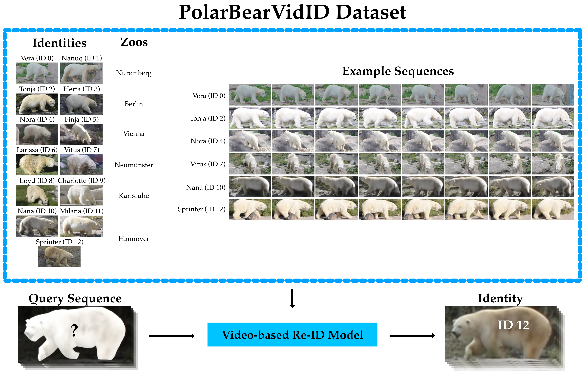

This is Vera. She is currently living at Hannover Zoo. She is also the namesake of our project, as she was the first polar bear we tested our software on.

Zuerl, Matthias; Dirauf, Richard; Koeferl, Franz; Steinlein, Nils; Sueskind,Jonas; Zanca, Dario; Brehm, Ingrid; von Fersen, Lorenzo; Eskofier, Bjoern. "PolarBearVidID: A Video-Based Re-Identification Benchmark Dataset for Polar Bears." Animals 13.5 (2023): 801.
Automated monitoring systems have become increasingly important for zoological institutions in the study of their animals’ behavior. One crucial processing step for such a system is the re-identification of individuals when using multiple cameras. Deep learning approaches have become the standard methodology for this task. Especially video-based methods promise to achieve a good performance in re-identification, as they can leverage the movement of an animal as an additional feature. This is especially important for applications in zoos, where one has to overcome specific challenges such as changing lighting conditions, occlusions or low image resolutions. However, large amounts of labeled data are needed to train such a deep learning model. We provide an extensively annotated dataset including 13 individual polar bears shown in 1431 sequences, which is an equivalent of 138,363 images. PolarBearVidID is the first video-based re-identification dataset for a non-human species to date. Unlike typical human benchmark re-identification datasets, the polar bears were filmed in a range of unconstrained poses and lighting conditions. Additionally, a video-based re-identification approach is trained and tested on this dataset. The results show that the animals can be identified with a rank-1 accuracy of 96.6%. We thereby show that the movement of individual animals is a characteristic feature and it can be utilized for re-identification.

Zuerl, Matthias; Stoll, Philip; Brehm, Ingrid; Raab, René; Zanca, Dario; Kabri, Samira; Happold, Johanna; Nille, Heiko; Prechtel, Katharina; Wuensch, Sophie; Krause, Marie; Seegerer, Stefan; von Fersen, Lorenzo; Eskofier, Bjoern. "Automated video-based analysis framework for behavior monitoring of individual animals in zoos using deep learning—A study on polar bears." Animals 12.6 (2022): 692.
The monitoring of animals under human care is a crucial tool for biologists and zookeepers to keep track of the animals’ physical and psychological health. Additionally, it enables the analysis of observed behavioural changes and helps to unravel underlying reasons. Enhancing our understanding of animals ensures and improves ex situ animal welfare as well as in situ conservation. However, traditional observation methods are time- and labor-intensive, as they require experts to observe the animals on-site during long and repeated sessions and manually score their behaviour. Therefore, the development of automated observation systems would greatly benefit researchers and practitioners in this domain. We propose an automated framework for basic behaviour monitoring of individual animals under human care. Raw video data are processed to continuously determine the position of the individuals within the enclosure. The trajectories describing their travel patterns are presented, along with fundamental analysis, through a graphical user interface (GUI). We evaluate the performance of the framework on captive polar bears (Ursus maritimus). We show that the framework can localize and identify individual polar bears with an F1 score of 86.4%. The localization accuracy of the framework is 19.9±7.6 cm, outperforming current manual observation methods. Furthermore, we provide a bounding-box-labeled dataset of the two polar bears housed in Nuremberg Zoo.
This is Vera. She is currently living at Hannover Zoo. She is also the namesake of our project, as she was the first polar bear we tested our software on.
As we are constantly developing new algorithms and applications, we are looking for project partners. You are invited to reach out to us to discuss possible collaborations.